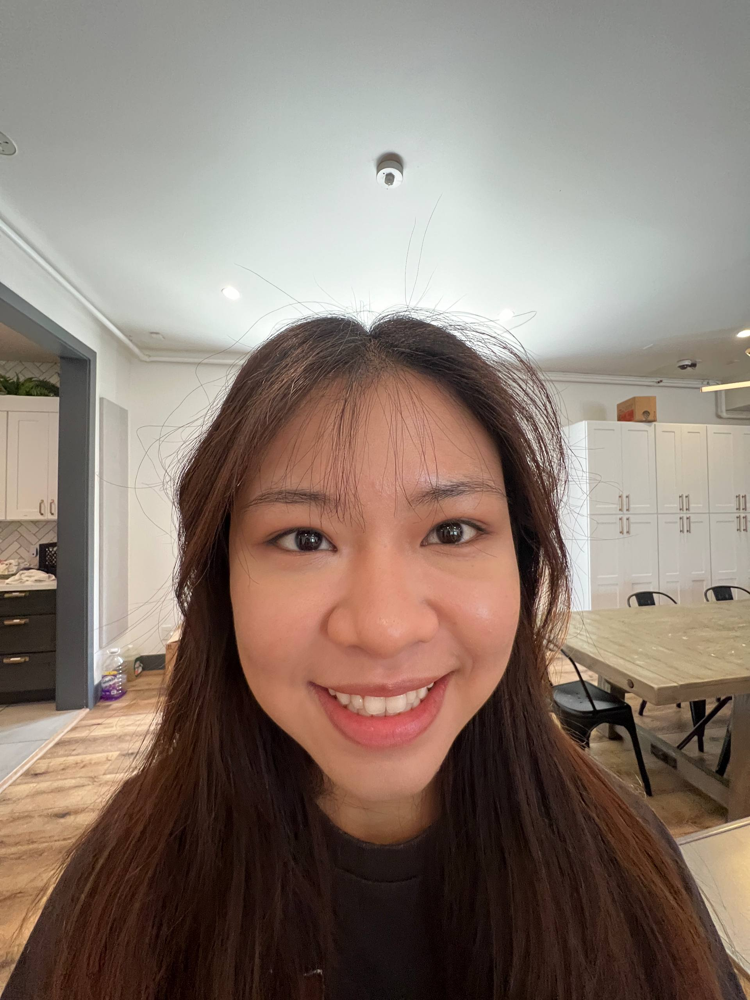
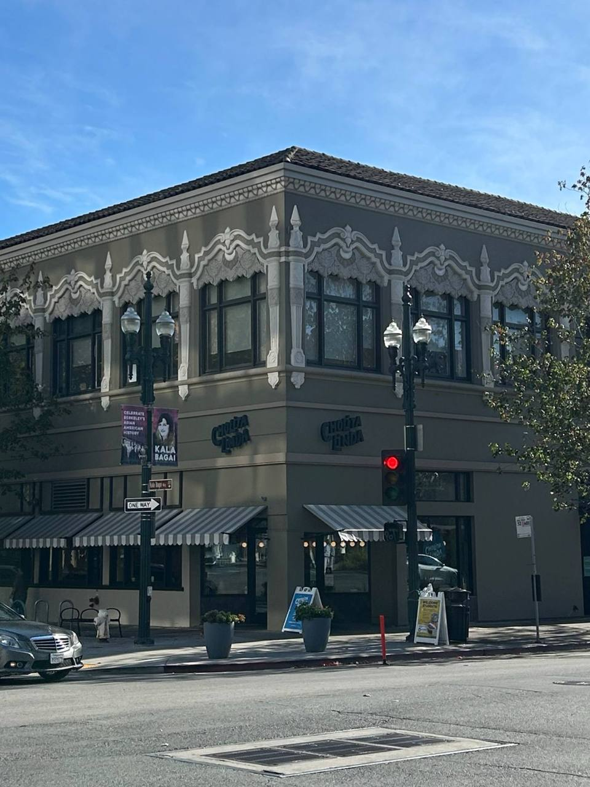
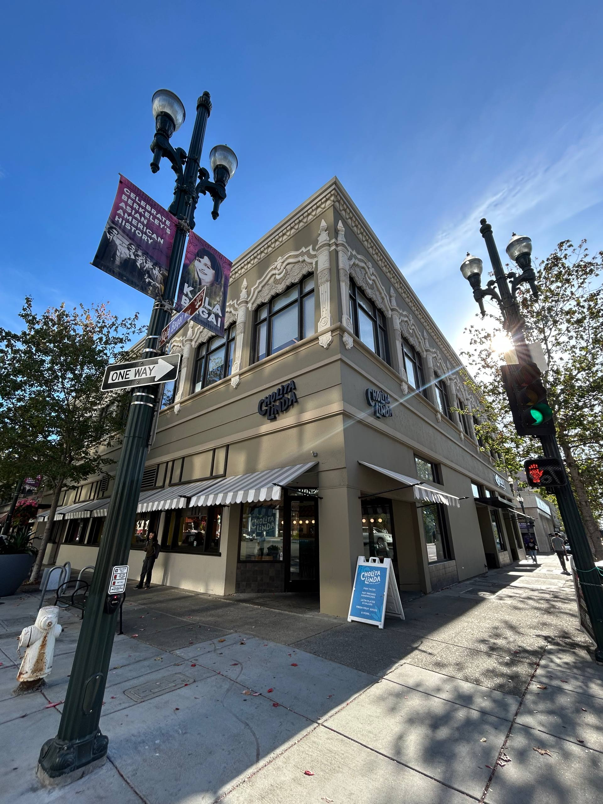

Becoming Friends
with Your Camera
Exploring the relationship between perspective, focal length, zoom and the center of projection through photography.
Selfie: The Wrong Way vs. The Right Way
For this experiment, I took a close-up photo before stepping back several feet and zooming in to capture the same subject at approximately the same size.

Close-up · The wrong way
Stepped back + zoomed in · The right way
What I noticed
What surprised me most was that the two photos could have a similar-sized face, but still look noticeably different. In the close-up photo, the features closer to the camera appeared more exaggerated, especially the nose and centre of the face. After stepping back and zooming in, the face looked more natural and proportionate. This made me realise that zooming in is not the same as physically moving closer. Even when the subject takes up roughly the same amount of space in the frame, changing the camera’s distance changes the perspective of the image.
Architectural Perspective Compression
I repeated the same idea with an architectural scene, first photographing the building from farther away while zoomed in, then moving closer without zoom.

Farther away + zoom

Closer + no zoom
What I noticed
The biggest difference I noticed was how the sense of depth changed between the two photos. In the zoomed-in photo taken from farther away, the building appeared more compressed and flatter. When I moved closer without zooming, the different parts of the scene appeared to have more separation and depth. Seeing this side-by-side made the effect much more obvious to me than just learning about it conceptually. I realised that changing the camera position can change the relationship between objects in a scene, even when the final framing looks similar.
The Dolly Zoom
For the final experiment, I moved the camera backwards while simultaneously zooming in, keeping the subject approximately the same size in each frame.

What I noticed
The most interesting part of this experiment was seeing the background change while the subject stayed roughly the same size. As I moved backwards and zoomed in, the subject remained relatively stable, but the surrounding scene appeared to shift and stretch. Taking the individual photos also made me realise how precise the camera movement needed to be. Even small changes in distance or zoom affected how smoothly the final GIF looked. Seeing the effect through my own photos made the idea of a dolly zoom much easier to understand than just seeing an example of it in a movie.